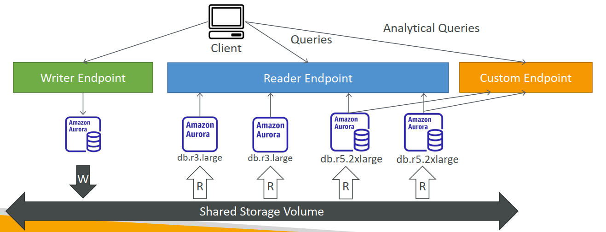

1. RDS Backups
- Backups are automatically enabled in RDS
- Automated backups:
- Daily full backup of the database (during the maintenance window)
- Transaction logs are backed-up by RDS every 5 minutes
- => ability to restore to any point in time (from oldest backup to 5 minutes ago)
- 7 days retention (can be increased to 35 days)
- DB Snapshots:
- Manually triggered by the user
- Retention of backup for as long as you want
2. RDS – Storage Auto Scaling
- Helps you increase storage on your RDS DB instance dynamically
- When RDS detects you are running out of free database storage, it scales automatically
- Avoid manually scaling your database storage
- You have to set Maximum Storage Threshold (maximum limit for DB storage)
- Automatically modify storage if:
- Free storage is less than 10% of allocated storage
- Low-storage lasts at least 5 minutes
- 6 hours have passed since last modification
- Useful for applications with unpredictable workloads
- Supports all RDS database engines (MariaDB, MySQL, PostgreSQL, SQL Server, Oracle)
3. RDS Read Replicas for read scalability
- Up to 5 Read Replicas
- Within AZ, Cross AZ or Cross Region
- Replication is ASYNC, so reads are eventually consistent
- Replicas can be promoted to their own DB
- Applications must update the connection string to leverage read replicas

4. RDS Read Replicas – Network Cost
- In AWS there's a network cost when data goes from one AZ to another
- For RDS Read Replicas within the same region, you don't pay that fee
5. RDS Multi AZ (Disaster Recovery)
- SYNC replication, Increase availability

6. RDS – From Single-AZ to Multi-AZ
- Zero downtime operation (no need to stop the DB)
- Just click on "modify" for the database
- The following happens internally:
- A snapshot is taken
- A new DB is restored from the snapshot in a new AZ
- Synchronization is established between the two databases

7. RDS Security - Encryption
- At rest encryption
- Possibility to encrypt the master & read replicas with AWS KMS - AES-256 encryption
- Encryption has to be defined at launch time
- If the master is not encrypted, the read replicas cannot be encrypted
- Transparent Data Encryption (TDE) available for Oracle and SQL Server
- In-flight encryption
- SSL certificates to encrypt data to RDS in flight
- Provide SSL options with trust certificate when connecting to database
- To enforce SSL:
- PostgreSQL: rds.force_ssl=1 in the AWS RDS Console (Parameter Groups)
- MySQL: Within the DB: GRANT USAGE ON . TO 'mysqluser'@'%' REQUIRE SSL;
8. RDS Security – IAM
- Access Management
- IAM policies help control who can manage AWS RDS (through the RDS API)
- Traditional Username and Password can be used to login into the database
- IAM-based authentication can be used to login into RDS MySQL & PostgreSQL
9. RDS - IAM Authentication
- IAM database authentication works with MySQL and PostgreSQL
- You don’t need a password, just an authentication token obtained through IAM & RDS API calls
- Auth token has a lifetime of 15 minutes
- Benefits:
- Network in/out must be encrypted using SSL
- IAM to centrally manage users instead of DB
- Can leverage IAM Roles and EC2 Instance profiles for easy integration

10. Amazon Aurora
- Aurora is a proprietary technology from AWS (not open sourced)
- Postgres and MySQL are both supported as Aurora DB (that means your drivers will work as if Aurora was a Postgres or MySQL database)
- Aurora is “AWS cloud optimized” and claims 5x performance improvement over MySQL on RDS, over 3x the performance of Postgres on RDS
- Aurora storage automatically grows in increments of 10GB, up to 128 TB.
- Aurora can have 15 replicas while MySQL has 5, and the replication process is faster (sub 10 ms replica lag)
- Failover in Aurora is instantaneous. It’s HA (High Availability) native.
- Aurora costs more than RDS (20% more) – but is more efficient
11. Aurora High Availability and Read Scaling
- 6 copies of your data across 3 AZ:
- 4 copies out of 6 needed for writes
- 3 copies out of 6 need for reads
- Self healing with peer-to-peer replication
- Storage is striped across 100s of volumes
- One Aurora Instance takes writes (master)
- Automated failover for master in less than 30 seconds
- Master + up to 15 Aurora Read Replicas serve reads
- Support for Cross Region Replication
12. Aurora – Custom Endpoints
- Define a subset of Aurora Instances as a Custom Endpoint
- Example: Run analytical queries on specific replicas
- The Reader Endpoint is generally not used after defining Custom Endpoints

13. Global Aurora
- Aurora Cross Region Read Replicas:
- Useful for disaster recovery
- Simple to put in place
- Aurora Global Database (recommended):
- 1 Primary Region (read / write)
- Up to 5 secondary (read-only) regions, replication lag is less than 1 second
- Up to 16 Read Replicas per secondary region
- Helps for decreasing latency
- Promoting another region (for disaster recovery) has an RTO of < 1 minute
14. ElastiCache – Redis vs Memcached
Redis：
- Multi AZ with Auto-Failover
- Read Replicas to scale reads and have high availability
- Data Durability using AOF persistence
- Backup and restore features
Memcached：
- Multi-node for partitioning of data (sharding)
- No high availability (replication)
- Non persistent
- No backup and restore
- Multi-threaded architecture
15. ElastiCache – Cache Security
- All caches in ElastiCache:
- Do not support IAM authentication
- IAM policies on ElastiCache are only used for AWS API-level security
- Redis AUTH
- You can set a "password/token" when you create a Redis cluster
- This is an extra level of security for your cache (on top of security groups)
- Support SSL in flight encryption
- Memcached
- Supports SASL-based authentication (advanced)
16. Patterns for ElastiCache

- Lazy Loading: all the read data is cached, data can become stale in cache
- Write Through: Adds or update data in the cache when written to a DB (no stale data)
- Session Store: store temporary session data in a cache (using TTL features)
Quote: There are only two hard things in Computer Science: cache invalidation 缓存失效 and naming things
17. ElastiCache – Redis Use Case
- 游戏排行榜的复杂计算
- Redis排序集保证了唯一性和元素顺序
- 每次添加新元素时，都会对其进行实时排名，然后添加到正确的顺序